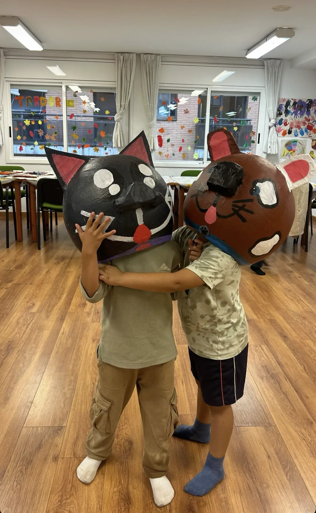
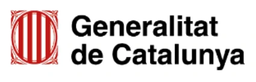

Educación, comunidad y oportunidades para transformar el territorio.
Proyectos educativos y de ocio para niños, adolescentes, jóvenes y familias de Tarragona, hechos con voluntariado, ganas y mucha cercanía.
- +80niños y adolescentes
- +100actividades al año
- 3–12años, en dos grupos




que transforma☀ Todo el año

No organizamos actividades aisladas: construimos procesos educativos.
Cada propuesta tiene una intención pedagógica y parte de las necesidades reales de las personas y del territorio. Queremos espacios seguros, inclusivos y participativos donde niños, adolescentes y familias puedan aprender, convivir y crecer.
Dónde trabajamos
Seis ámbitos con una misma manera de hacer: escuchar, diseñar y acompañar.

Nuestro proyecto de ocio educativo
Juego, creatividad, convivencia y educación emocional durante el curso, en verano y en Navidad.
Resultados y aprendizajes
De la necesidad al proyecto
Proyectos adaptados a cada comunidad y territorio: desde el diagnóstico hasta la evaluación.
- Escuchamos
Analizamos las necesidades de las personas, entidades y territorio.
- Diseñamos
Definimos objetivos, metodología, actividades, recursos e indicadores.
- Coordinamos
Trabajamos con instituciones, centros, familias y agentes comunitarios.
- Desarrollamos
Llevamos a cabo las acciones con profesionales y metodologías activas.
- Evaluamos y mejoramos
Recogemos resultados, aprendizajes y propuestas de mejora.
No partimos de un catálogo cerrado: podemos asumir el proyecto completo o solo las fases que necesitéis.
Nuestro trabajo en imágenes
Una muestra de las actividades y de las personas que las hacen posibles. Más fotos en Instagram


Con quién hacemos posibles los proyectos
Administraciones públicas, centros educativos, servicios sociales, entidades del territorio, familias y comunidad. Equipo y red



¿Tenéis una necesidad educativa o comunitaria?
Si sois una administración, un centro educativo o una entidad, explicadnos el contexto. En una primera reunión técnica valoraremos juntos cómo construir una respuesta adaptada.